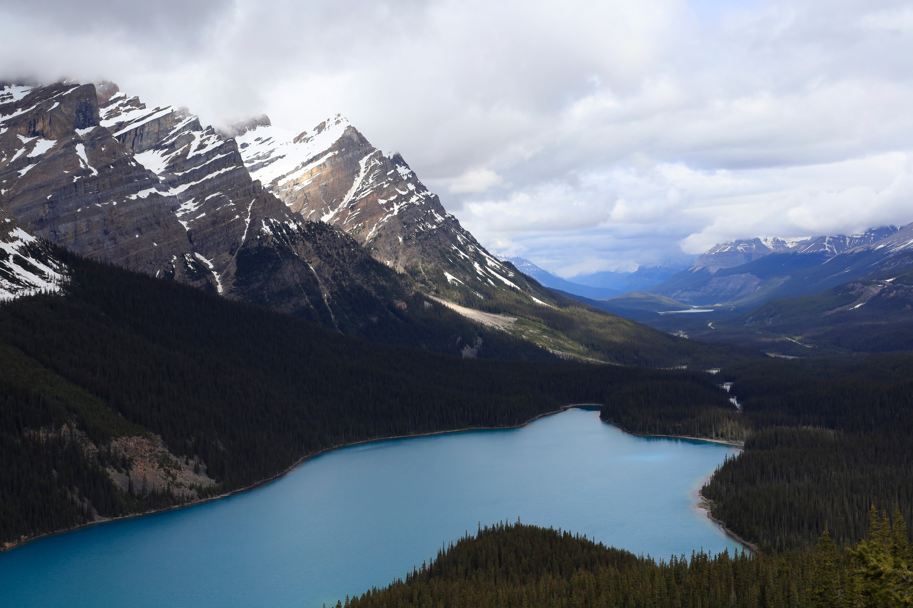
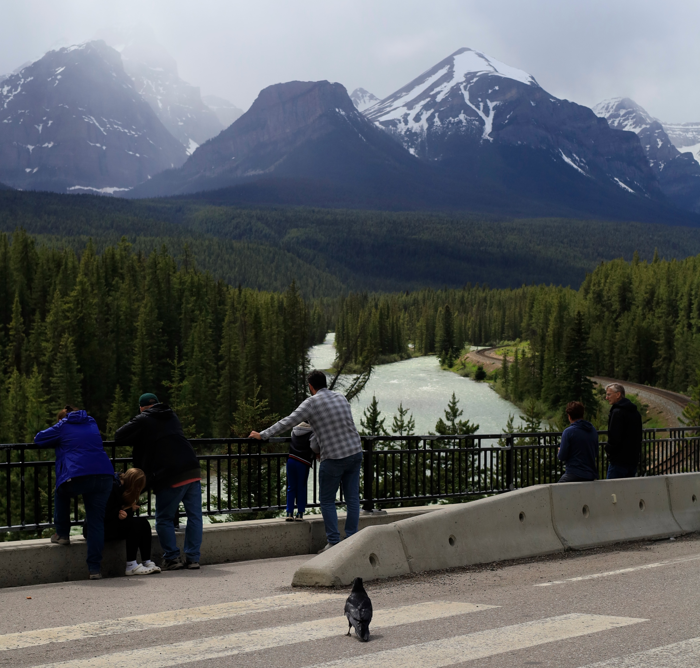
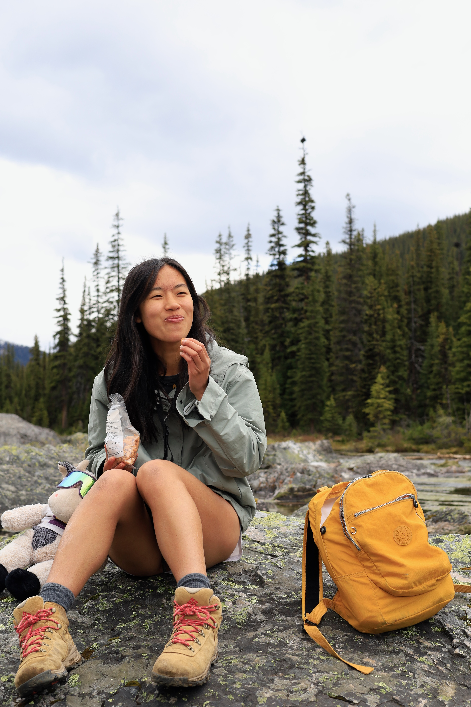
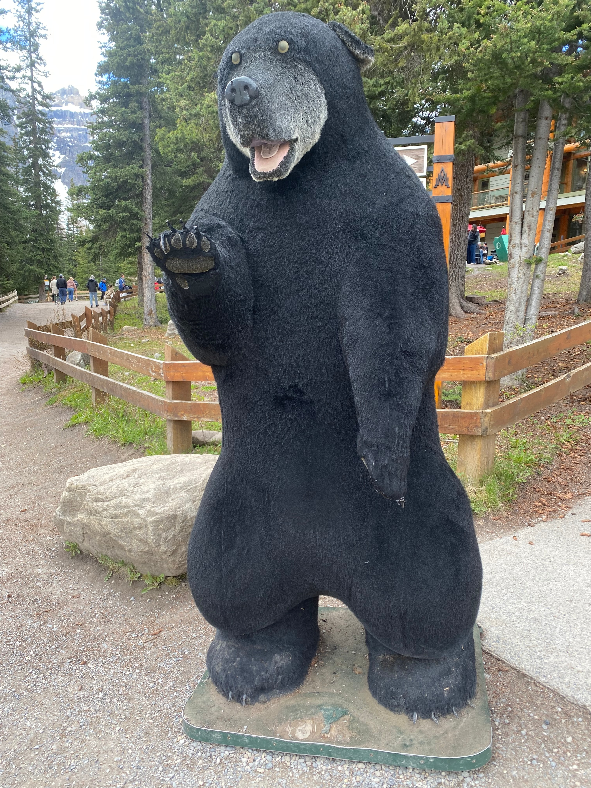

Welcome to the Human Aquarium: Banff National Park
20 June 2026

Welcome to Banff National Park, where nature meets man! Join this vast expanse of fellow forests, rocky mountains, and unusually blue lakes, and enjoy the sight of thousands of humans from all around the world each day. Of course, we recognize the concern about the dangers that humans pose, but we are confident that this aquarium provides a danger-free experience. For your comfort and safety, the humans are confined to trails and paths to walk on. In areas of high human concentration, we have constructed fences and walkways, which also provide an exceptional viewing experience.
As someone who "likes the outdoors", I imagined a family vacation to the Canadian Rockies would be a great trip to connect with nature. Having never been to a national park, I pictured an immersive experience surrounded by trees, living with bears, elk, and mountain goats as my neighbors. When I embarked on my journey, however, it was not quite as I expected. The mountains were stunning and the everywhere I looked was picturesque, but I very quickly realized that I, as a human, don't really belong in a natural place like this.


Our first stop was Johnston Canyon in Banff National Park. As we walked down the boardwalk path cut out for us, I was first struck by the epicness of the canyon, the violent force of the river rushing down the ancient stone. But what struck me next was the crowd of people gathering in lines at every viewpoint of the waterfall, waiting for their turn to take a photo. It was raining and so I decided against waiting in these lines, instead opting to take photos of the people. When I looked at the crowd of people from this perspective, I couldn't help seeing the humans as a display for the trees, organized and contained with fences and walkways. It was a human aquarium, where the people were the fish entertaining the trees.

As I explored Banff National Park further, I started to realize how disconnected we humans are with nature. So many of us live in cities, going about our daily lives, concerned with money, goals, or career and not thinking twice about the forests our ancestors evolved from. But out here, the broken relationship between humans and nature is clear. I may say that I "like the outdoors", but what are the outdoors that I know? I have never lived amongst the trees, or slept on the bare earthly soil, without a tent or a house or a sleeping bag around me. I've never had to search for berries, or hunt prey, or drink out of a river. In the most natural and untouched places of the earth, I am merely a guest.
And yet we gather in crowds to see nature. We say that we "like the outdoors" even though the wilderness is foreign to us. Even though we have destroyed so much of nature in building civilization, we still find the untouched landscape beautiful, the pollution-free air refreshing, the sighting of wildlife animal whimsical. Perhaps a part of us still yearns to participate in nature.
I imagine that when the thousand-year-old trees visit the human aquarium of this national park, they laugh,
Ha ha ha. Look at these silly creatures, with their waterproof jackets, boots, pants. Do they forget their skin is waterproof? They're lining up to use their restrooms, when there are hundreds of acres of forest around them. Are those energy bars that they're eating? Ha ha ha, we have food here in the forest! Look at them taking photos of us with their cellphones, as if we are a rare and treasured spectacle. As if they didn't cut us all down everywhere else in the world to build their houses and cities.




